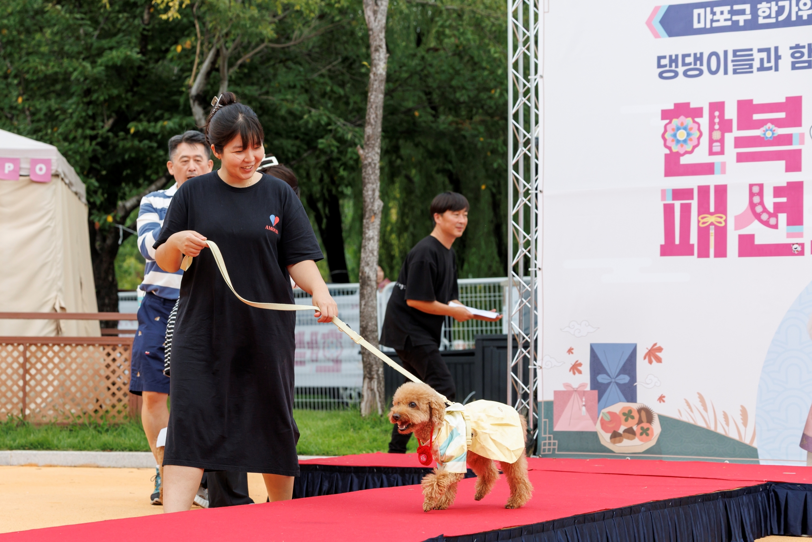

마포구, 추석 맞이 반려동물캠핑장 '댕댕이 한복 패션쇼'
9월 20일 난지한강공원, 선착순 30팀 무료 참가

[시사포커스 / 김재록 기자] 마포구가 추석을 맞아 오는 9월 20일 난지한강공원 내 마포반려동물캠핑장에서 '한가위 맞이 댕댕이 한복 패션쇼'를 개최한다. 마포반려동물캠핑장이 주관하는 이번 행사는 반려견과 가족이 함께 명절의 즐거움을 나누고 특별한 추억을 만들 수 있도록 기획됐다. 패션쇼에 참가하는 반려견은 가족이 직접 준비한 한복을 입거나 현장에 마련된 한복을 활용해 무대에 오를 수 있으며, 포토존과 국악 버스킹 공연 등 다채로운 부대 프로그램도 함께 운영된다.
마포구에 따르면, 행사에 참여할 반려견 가족은 선착순 30팀을 모집하며 1인당 최대 2마리까지 함께 참가할 수 있다. 참가비는 무료이며, 홍보 포스터 내 QR 코드로 접속해 신청하면 된다. 패션쇼에서는 심사를 통해 3팀을 선정하고 선발팀에게 경품을 증정할 계획이다. 유동균 마포구청장은 '온 가족이 반려견과 함께 명절의 기쁨을 나누고 뜻깊은 추억을 만들 수 있기를 바란다'며 '앞으로도 사람과 동물이 함께 행복한 반려동물 친화 도시 마포를 만들어 가는 데 최선을 다하겠다'고 말했다.
마포반려동물캠핑장은 패션쇼와 별개로 9월 15일부터 27일까지 방문객과 반려견이 언제든 한복을 입고 기념사진을 촬영할 수 있는 상시 체험 공간도 운영한다. 패션쇼에 직접 참여하지 않더라도 가족과 반려견이 함께 추석 명절 분위기를 즐길 수 있어 반려동물을 키우는 마포구 주민들의 많은 관심이 예상된다.
📌 출처: 마포구청 보도자료